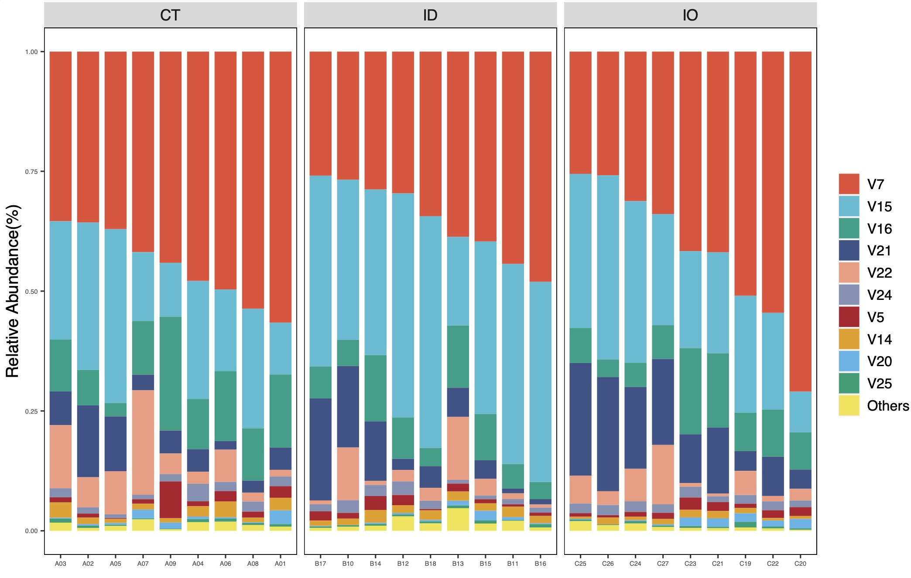

10. Structure结构图
物种结构图常用来展现样本主要微生物的分布情况，多用堆叠柱状图的形式出现。本章节structure_plot模块可以基于平均值、中位数、最大丰度、最小丰度的四种方式筛选TOP物种，并进行结构图展示。
structure_plot模块
structure_plot模块是基于4.1的data_filter函数筛选出各个级别的核心微生物，因此可以直接仿照data_filter函数语法，读取dataframe、list和file三种格式。
10.1.1 参数介绍
data输入微生物数据支持
dataframe和list两种格式,dataframe应符合3.1中的格式要求，也可将不同级别微生物数据dataframe直接合并为list输入。dir:指定微生物数据文件存放的地址，文件可以以
csv和txt格式保存，格式应符合3.1中的格式要求。min_relative：指定最小的微生物物种相对丰度数值，低于此阈值的相对丰度将会被过滤为0。
min_ratio：指定最小的微生物物种在至少一个分组内的出现率，低于此阈值的物种将会被过滤。
design：指定样本分组信息
mapping文件,支持直接输入dataframe或者指定文件地址。measure:指定特定的微生物物种按照由低到高的丰度重新排序样本
num:指定展示微生物物种的最大数量，其余物种将会合并如Others
structure_method：指定判断微生物物种名次的方式。（mean,median,max,min)【默认：mean】
estimate_group:指定根据全部分组或者某一组的数据判断微生物的名次，默认为全部分组数据。【默认：default】
tax_level:调整出图后物种的排序。
pattern：指定在文件夹内微生物数据文件名的特征信息，与
dir配合使用。output：指定是否将核心微生物计算结果输出。【默认：关闭】
change：Qiime2产生物种注释结果中有时出现完全为空的情况（
d__Bacteria;__;__)，打开此选项后可以将其修正为（d__Bacteria;Other;Other)。【默认：关闭】change_name：指定空注释的修改名，与
change配合使用。【默认：Other】row_panel:指定拼图结果输出每行的图形数目。
group_level:指定图形中分组显示的排列顺序。
palette:指定绘图色板。
mytheme:支持ggplot2主题代码，便于图形美化。
10.1.2 使用范例
代码示例：
Library(EasyMciroPlot) # 加载包
# 基本使用方式,自动按照均值前10名绘制物种结构图
structure_re <- structure_plot(dir = '16s_data/',design = 'mapping/mapping.txt',
min_relative = 0.001,min_ratio = 0.7,num=10)
cooc_re$result$filter_data ## 这里存储了前置data_filter函数过滤的核心微生物结果
structure_re$result$top_abundance ## 这里存储了结构图中TOP显示物种的丰度数据
structure_re$pic ## 这里存储了各个微生物物种级别及各组的结构图
基本计算结果：
Tips 1: 这里仅展示纲级别的结果，用户可以根据输入数据情况查看其他级别的结果。
# TOP物种的纲水平的数据
structure_re$result$top_abundance$class
| Group | SampleID | V7 | V15 | V16 | V21 | V22 | V24 | V5 | V14 | V20 | V25 | Others |
|---|---|---|---|---|---|---|---|---|---|---|---|---|
| CT | A01 | 0.56583699 | 0.10818157 | 0.15221528 | 0.04663534 | 0.01386246 | 0.02011416 | 0.02423019 | 0.0262882 | 0.02861803 | 0.00531977 | 0.00869802 |
| CT | A02 | 0.35700695 | 0.30738166 | 0.07401079 | 0.14976896 | 0.0627888 | 0.01308585 | 0.00850386 | 0.01335767 | 0.00333942 | 0.00462082 | 0.00613521 |
| ... | ... | ... | ... | ... | ... | ... | ... | ... | ... | ... | ... | ... |
| IO | C26 | 0.2583 | 0.38414942 | 0.03692774 | 0.23803052 | 0.02881218 | 0.02127907 | 0.00493146 | 0.01405661 | 0 | 0.00166971 | 0.01184328 |
| IO | C27 | 0.33922261 | 0.23189531 | 0.07047723 | 0.17928008 | 0.12394672 | 0.01759018 | 0.0128917 | 0.01118316 | 0.00252398 | 0.00295111 | 0.0080379 |
# 纲级别物种完整注释名称
structure_re$result$filter_data$class_ID
ID tax
1 V1 Unassigned;Other;Other
2 V2 k__Bacteria;p__Acidobacteria;c__Acidobacteriia
3 V3 k__Bacteria;p__Acidobacteria;c__iii1-8
4 V4 k__Bacteria;p__Actinobacteria;c__Actinobacteria
5 V5 k__Bacteria;p__Actinobacteria;c__Coriobacteriia
6 V6 k__Bacteria;p__Actinobacteria;c__MB-A2-108
7 V7 k__Bacteria;p__Bacteroidetes;c__Bacteroidia
8 V8 k__Bacteria;p__Bacteroidetes;c__Flavobacteriia
9 V9 k__Bacteria;p__Bacteroidetes;c__Sphingobacteriia
10 V10 k__Bacteria;p__Chloroflexi;c__Anaerolineae
11 V11 k__Bacteria;p__Cyanobacteria;c__4C0d-2
12 V12 k__Bacteria;p__Cyanobacteria;c__Chloroplast
13 V13 k__Bacteria;p__Deferribacteres;c__Deferribacteres
14 V14 k__Bacteria;p__Firmicutes;c__Bacilli
15 V15 k__Bacteria;p__Firmicutes;c__Clostridia
16 V16 k__Bacteria;p__Firmicutes;c__Erysipelotrichi
17 V17 k__Bacteria;p__GAL15;c__
18 V18 k__Bacteria;p__OD1;c__ZB2
19 V19 k__Bacteria;p__Proteobacteria;c__Alphaproteobacteria
20 V20 k__Bacteria;p__Proteobacteria;c__Betaproteobacteria
21 V21 k__Bacteria;p__Proteobacteria;c__Deltaproteobacteria
22 V22 k__Bacteria;p__Proteobacteria;c__Epsilonproteobacteria
23 V23 k__Bacteria;p__Proteobacteria;c__Gammaproteobacteria
24 V24 k__Bacteria;p__TM7;c__TM7-3
25 V25 k__Bacteria;p__Tenericutes;c__Mollicutes
26 V26 k__Bacteria;p__Verrucomicrobia;c__Verrucomicrobiae
图形结果展示：
# 纲级别核心微生物结构图，用户可以根据输入数据提起其他级别
structure_re$pic$class$barplot$Total

# 图形输出可以通过多个参数对图形进行美化
top_num <- 5 ## 选取前五名物种
group_order <- c('ID','CT','IO') ## 设定排序，名称需要绝对一致
tax_order <- c('Others','V7','V15','V16','V21','V22')
cols <- c("#432c39", "#437478", "#b8b7a1", "#eed7b8","#e5855f", "#db6c4e", "#d24d3a") ## 设定颜色方案
# mytheme 支持ggplot2主题语法
library(ggplot2)
newtheme_slope=theme(axis.text.x =element_text(angle = 45, hjust = 1,size = 10))
# 出图
# 注意由于设置了只符合纲级别的tax_level参数，因此建议只输入纲级别数据，否则其他级别数据将会因无法匹配而出现warning
# 这里可以利用pattern参数，根据文件名只选择读取纲级别数据；也可以利用预读取纲级别数据，再利用data参数输入
structure_re <- structure_plot(dir = '16s_data/',design = 'mapping/mapping.txt',
min_relative = 0.001,min_ratio = 0.7,num=top_num,
group_level = group_order,tax_level =tax_order,palette = cols,
mytheme =newtheme_slope,pattern = 'L3',measure = 'Others')